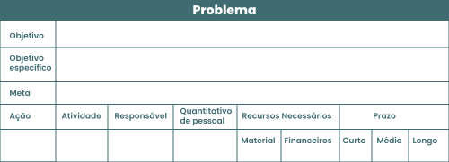

TÓPICO 3
OPERACIONALIZAÇÃO DA PROGRAMAÇÃO EM SAÚDE NA APS
TÓPICO 3
OPERACIONALIZAÇÃO DA PROGRAMAÇÃO EM SAÚDE NA APS
A definição dos responsáveis e participantes na execução de cada atividade é um passo que faz parte da elaboração dos módulos operacionais. Em se tratando do planejamento de saúde, entretanto, é importante chamar a atenção para a importância da atribuição de responsabilidades; nesse caso, não é um processo eminentemente técnico, de delegação de funções e competências, mas um processo político, no qual se testa, inclusive, o grau de comprometimento das diversas instituições e dos diversos atores com este processo (UMPIERRE et al., 2017).
Veja este exemplo de módulo operacional ou matriz operativa da programação em saúde.
